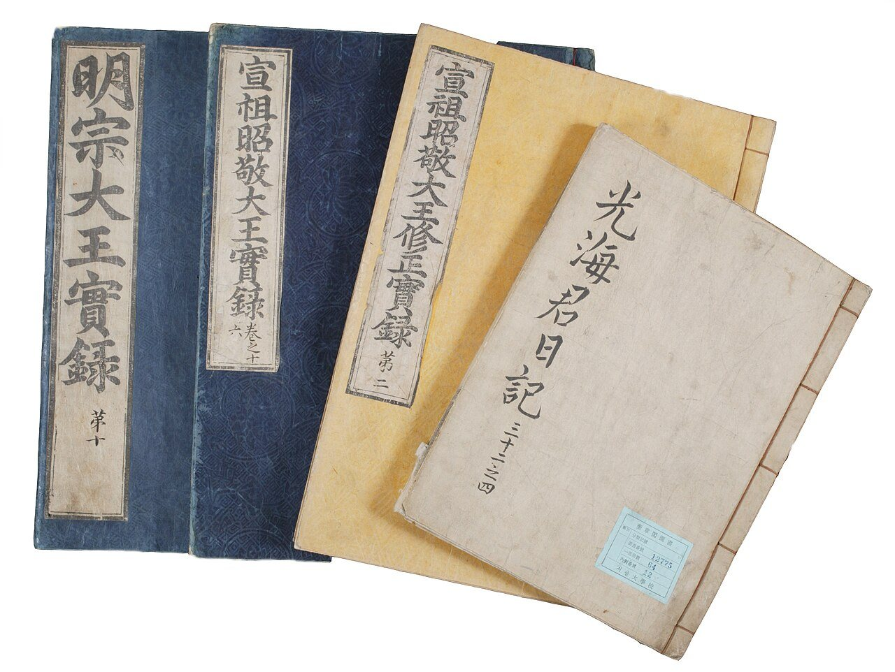
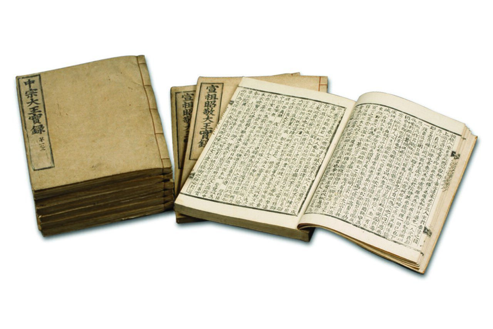
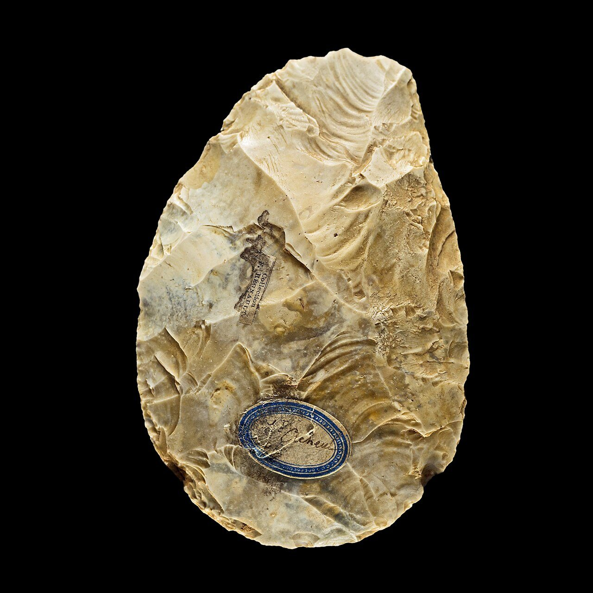
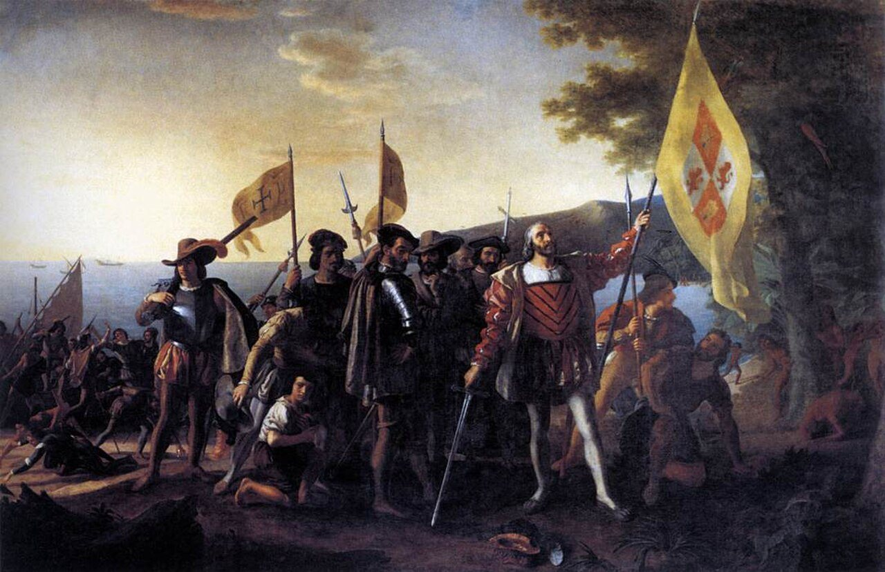
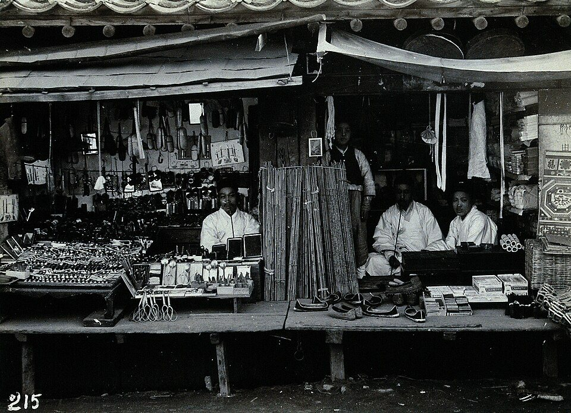

사진 · 조선왕조실록
중학교 역사① · 1단원 역사 학습의 기초
기록역사란 무엇인가
『조선왕조실록』 태백산사고본 · 국가유산청 · 공공누리 제1유형
“일어난 일은
일어난 일은
모두 역사가 될까?
사실어제 나에게 일어난 일 세 가지
해석그중 100년 뒤에도 남을 것은
확장남길 것은 누가 고를까
일어난 일과거
남은 흔적사료
쓰인 이야기기록
1404
왕은 무엇을
숨기고 싶었을까?
사실사냥하다 말에서 떨어졌다
왕의 말“사관이 알게 하지 말라”
그리고그 말까지 적혔다

사진 · 조선왕조실록 오대산사고본
왜 왕도
실록을 볼 수 없었을까?
사실사초 · 춘추관 · 사고
해석누가 고칠까 봐?
확장믿을 수 있는 기록의 조건
『조선왕조실록』 오대산사고본 · 국가유산청 · 공공누리 제1유형

사진 · 주먹도끼
흔적글이 없던 시대는 어떻게 알까?
주먹도끼, 프랑스 생아슐 · 툴루즈 자연사 박물관 · 사진 Didier Descouens · CC BY-SA 4.0

그림 · 콜럼버스의 상륙
발견일까,
도착일까?
사실1492년, 바하마의 섬
해석그림 속 원주민은 어디에?
확장이름은 누가 붙였을까
존 밴더린, 「콜럼버스의 상륙」(1837~1847) · 퍼블릭 도메인
역사가는
무엇을 고를까?
사실셀 수 없이 많은 일
해석고르는 기준은 질문
확장질문이 바뀌면 역사도 바뀔까

사진 · 1900년 무렵 조선의 가게
빈칸기록되지 않은 사람들
1900년 무렵 조선의 가게 · Wellcome Collection · CC BY 4.0
누가남겼나
누구에게보여 주려 했나
사실·주장무엇일까
오늘의 사관
우리 반의 오늘을 한 줄로 남긴다면?
누가 적어야 믿을 수 있을까?
“역사는 이다.